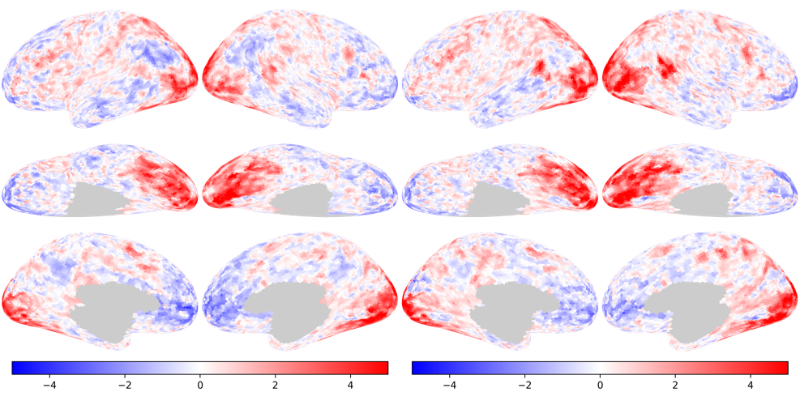
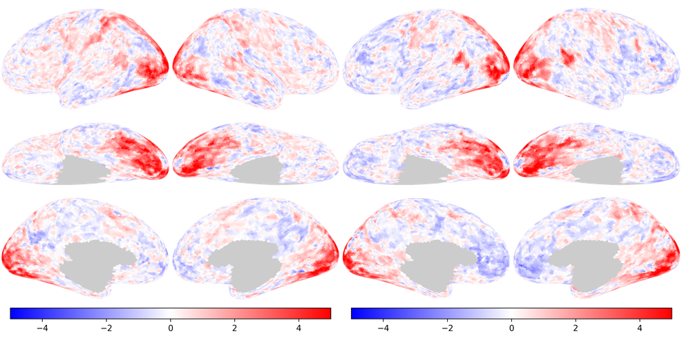
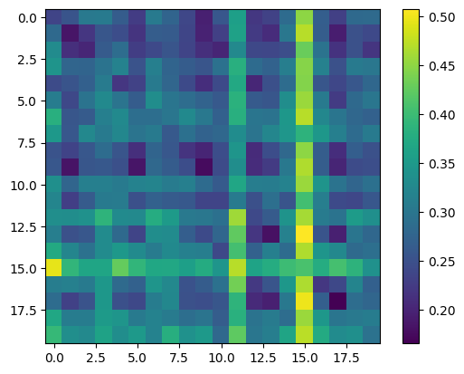
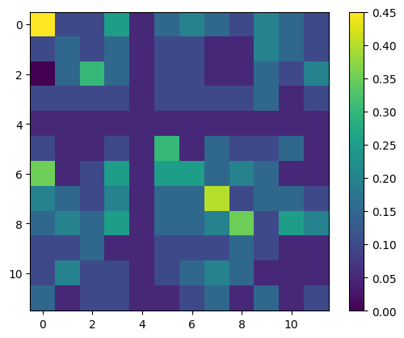

Multivariate pattern classification#
%%capture
%pip install -U neuroboros
import neuroboros as nb
import numpy as np
from scipy.spatial.distance import pdist, cdist, squareform
import matplotlib.pyplot as plt
dset = nb.Life()
sids = dset.subject_sets['attention']
contrasts = dset.contrasts[:20]
contrasts
['primate_eating',
'primate_fighting',
'primate_running',
'primate_swimming',
'ungulate_eating',
'ungulate_fighting',
'ungulate_running',
'ungulate_swimming',
'bird_eating',
'bird_fighting',
'bird_running',
'bird_swimming',
'reptile_eating',
'reptile_fighting',
'reptile_running',
'reptile_swimming',
'insect_eating',
'insect_fighting',
'insect_running',
'insect_swimming']
maps = {}
for task in ['tax', 'beh']:
for sid in sids:
cc = []
for run_ in [1, 2, 3, 4, 5]:
c = [dset.load_contrasts(sid, task, run_, lr, kind='t')[:20]
for lr in 'lr']
c = np.concatenate(c, axis=1)
cc.append(c)
maps[task, sid] = np.nanmean(cc, axis=0)
/var/folders/7k/tr89hggn2z5207_hn18ttpk80000gn/T/ipykernel_42908/332181352.py:10: RuntimeWarning: Mean of empty slice
maps[task, sid] = np.nanmean(cc, axis=0)
sid = sids[0]
vmax = 5
t0 = nb.plot(maps['tax', sid][0], cmap='bwr', vmax=vmax, vmin=-vmax)
t1 = nb.plot(maps['tax', sid][1], cmap='bwr', vmax=vmax, vmin=-vmax)
b0 = nb.plot(maps['beh', sid][0], cmap='bwr', vmax=vmax, vmin=-vmax)
b1 = nb.plot(maps['beh', sid][1], cmap='bwr', vmax=vmax, vmin=-vmax)
nb.Image.hstack([t0, t1])

nb.Image.hstack([b0, b1])

d = cdist(maps['tax', sid], maps['beh', sid], 'correlation')
plt.imshow(d)
plt.colorbar()
plt.show()

np.argmin(d, axis=0)
array([ 0, 9, 2, 1, 4, 9, 2, 2, 8, 9, 2, 11, 4, 13, 2, 7, 16,
17, 11, 2])
np.arange(20)
array([ 0, 1, 2, 3, 4, 5, 6, 7, 8, 9, 10, 11, 12, 13, 14, 15, 16,
17, 18, 19])
ns = len(sids)
ns
12
accs = np.zeros((ns, ns))
for i, s1 in enumerate(sids):
for j, s2 in enumerate(sids):
d = cdist(maps['tax', s1], maps['beh', s2], 'correlation')
accs[i, j] = np.mean(np.argmin(d, axis=0) == np.arange(20))
plt.imshow(accs)
plt.colorbar()
plt.show()
